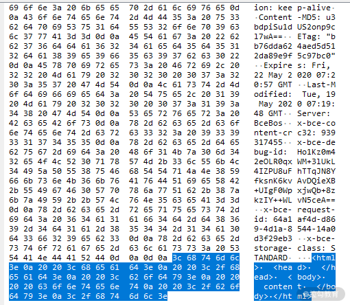
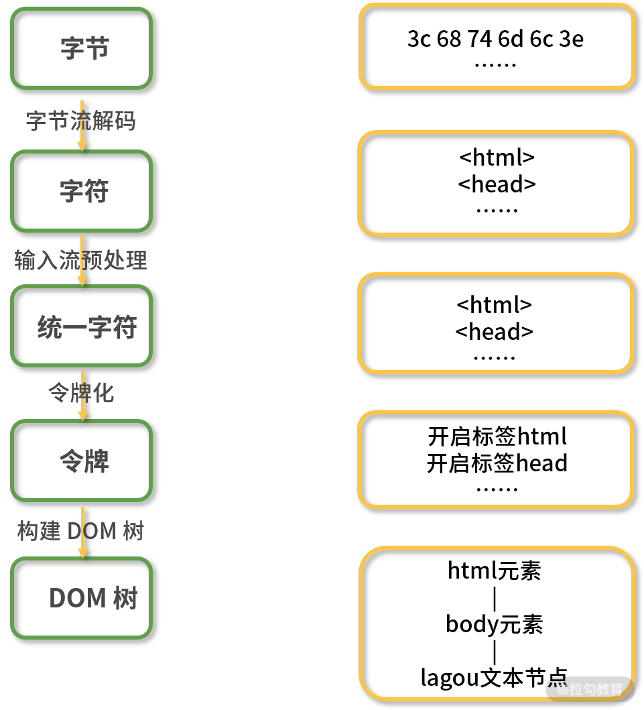
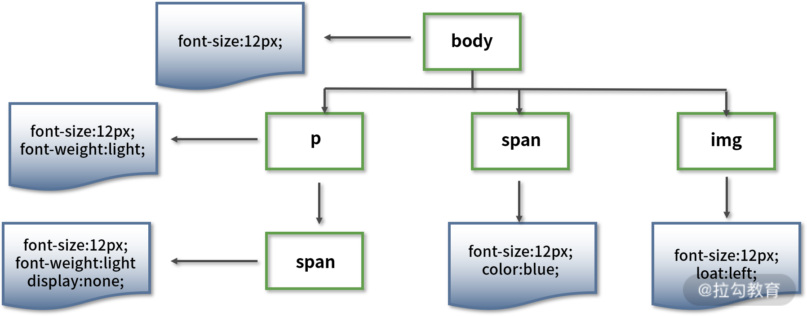

要点：浏览器渲染原理、浏览器进程与线程、浏览器加载网络资源的速度
一、浏览器渲染页面的步骤
结合代码实例讲解浏览器渲染页面时的流程和步骤。
先来看一个例子，假如我们在浏览器中输入了一个网址，得到了下面的 html 文件，渲染引擎是怎样通过解析代码生成页面的呢？
1 | <html> |
从 HTML 到 DOM
1. 字节流解码
对于上面的代码，我们看到的是它的字符形式。而浏览器通过 HTTP 协议接收到的文档内容是字节数据，下图是抓包工具截获的报文截图，报文内容为左侧高亮显示的区域（为了查看方便，该工具将字节数据以十六进制方式显示）。当浏览器得到字节数据后，通过“编码嗅探算法”来确定字符编码，然后根据字符编码将字节流数据进行解码，生成截图右侧的字符数据，也就是我们编写的代码。
这个把字节数据解码成字符数据的过程称之为“字节流解码”。

我们通过浏览器调试工具查看网络请求时，也是经过了上述操作过程，才能直观地看到字符串。
2. 输入流预处理
通过上一步解码得到的字符流数据在进入解析环节之前还需要进行一些预处理操作。比如将换行符转换成统一的格式，最终生成规范化的字符流数据，这个把字符数据进行统一格式化的过程称之为“输入流预处理”。
3. 令牌化
经过前两步的数据解码和预处理，下面就要进入重要的解析步骤了。
解析包含两步，第一步是将字符数据转化成令牌（Token），第二步是解析 HTML 生成 DOM 树。先来说说令牌化，其过程是使用了一种类似状态机的算法，即每次接收一个或多个输入流中的字符；然后根据当前状态和这些字符来更新下一个状态，也就是说在不同的状态下接收同样的字符数据可能会产生不同的结果，比如当接收到“body”字符串时，在标签打开状态会解析成标签，在标签关闭状态则会解析成文本节点。
这个算法的解析规则较多，在此就不一一列举了，有兴趣的同学可以通过下面这个简单的例子来理解其原理。
上述 html 代码的标记过程如下：
- 初始化为“数据状态”（Data State）；
- 匹配到字符 <，状态切换到 “标签打开状态”（Tag Open State）；
- 匹配到字符 !，状态切换至 “标签声明打开状态”（Markup Declaration Open State），后续 7 个字符可以组成字符串 DOCTYPE，跳转到 “DOCTYPE 状态”（DOCTYPE State）；
- 匹配到字符为空格，当前状态切换至 “DOCTYPE 名称之前状态”（Before DOCTYPE Name State）；
- 匹配到字符串 html，创建一个新的 DOCTYPE 标记，标记的名字为 “html” ，然后当前状态切换至 “DOCTYPE 名字状态”（DOCTYPE Name State）；
- 匹配到字符 >，跳转到 “数据状态” 并且释放当前的 DOCTYPE 标记；
- 匹配到字符 <，切换到 “标签打开状态”；
- 匹配到字符 h，创建一个新的起始标签标记，设置标记的标签名为空，当前状态切换至 “标签名称状态”（Tag Name State）；
- 从字符 h 开始解析，将解析的字符一个一个添加到创建的起始标签标记的标签名中，直到匹配到字符 >，此时当前状态切换至 “数据状态” 并释放当前标记，当前标记的标签名为 “html” 。
- 解析后续的 的方式与 一致，创建并释放对应的起始标签标记，解析完毕后，当前状态处于 “数据状态” ；
- 匹配到字符串 “标记” ，针对每一个字符，创建并释放一个对应的字符标记，解析完毕后，当前状态仍然处于 “数据状态” ；
- 匹配到字符 <，进入 “标签打开状态” ；
- 匹配到字符 /，进入 “结束标签打开状态”（End Tag Open State）；
- 匹配到字符 b，创建一个新的结束标签标记，设置标记的标签名为空，当前状态切换至“标签名称状态”（Tag Name State）；
- 重新从字符 b 开始解析，将解析的字符一个一个添加到创建的结束标签标记的标签名中，直到匹配到字符 >，此时当前状态切换至 “数据状态” 并释放当前标记，当前标记的标签名为 “body”；
- 解析 的方式与 一样；
- 所有的 html 标签和文本解析完成后，状态切换至 “数据状态” ，一旦匹配到文件结束标志符（EOF），则释放 EOF 标记。
最终生成类似下面的令牌结构：
1 | 开始标签:html |
补充 1：遇到 script 标签时的处理
如果在 HTML 解析过程中遇到 script 标签，则会发生一些变化。
如果遇到的是内联代码，也就是在 script 标签中直接写代码，那么解析过程会暂停，执行权限会转给 JavaScript 脚本引擎，待 JavaScript 脚本执行完成之后再交由渲染引擎继续解析。有一种情况例外，那就是脚本内容中调用了改变 DOM 结构的 document.write() 函数，此时渲染引擎会回到第二步，将这些代码加入字符流，重新进行解析。
如果遇到的是外链脚本，那么渲染引擎会按照我们在第 01 课时中所述的，根据标签属性来执行对应的操作。
4. 构建 DOM 树
解析 HTML 的第二步是树构建。
浏览器在创建解析器的同时会创建一个 Document 对象。在树构建阶段，Document 会作为根节点被不断地修改和扩充。标记步骤产生的令牌会被送到树构建器进行处理。HTML 5 标准中定义了每类令牌对应的 DOM 元素，当树构建器接收到某个令牌时就会创建该令牌对应的 DOM 元素并将该元素插入到 DOM 树中。
为了纠正元素标签嵌套错位的问题和处理未关闭的元素标签，树构建器创建的新 DOM 元素还会被插入到一个开放元素栈中。
树构建算法也可以采用状态机的方式来描述，具体我们以步骤 1 的 HTML 代码为例进行举例说明。
- 进入初始状态 “initial” 模式；
- 树构建器接收到 DOCTYPE 令牌后，树构建器会创建一个 DocumentType 节点附加到 Document 节点上，DocumentType 节点的 name 属性为 DOCTYPE 令牌的名称，切换到 “before html” 模式；
- 接收到令牌 html 后，树构建器创建一个 html 元素并将该元素作为 Document 的子节点插入到 DOM 树中和开放元素栈中，切换为 “before head” 模式；
- 虽然没有接收到 head 令牌，但仍然会隐式地创建 head 元素并加到 DOM 树和开放元素栈中，切换到“in head”模式；
- 将开放元素栈中的 head 元素弹出，进入 “after head”模式；
- 接收到 body 令牌后，会创建一个 body 元素插入到 DOM 树中同时压入开放元素栈中，当前状态切换为 “in body” 模式；
- 接收到字符令牌，创建 Text 节点，节点值为字符内容“标记”，将 Text 节点作为 body 元素节点插入到 DOM 树中；
- 接收到结束令牌 body，将开放元素栈中的 body 元素弹出，切换至 “after body” 模式；
- 接收到结束令牌 html，将开放元素栈中的 html 元素弹出，切换至 “after after body” 模式；
- 接收到 EOF 令牌，树构建器停止构建，html 文档解析过程完成。
最终生成下面的 DOM 树结构：
1 | Document |

补充 2：从 CSS 到 CSSOM
渲染引擎除了解析 HTML 之外，也需要解析 CSS。
CSS 解析的过程与 HTML 解析过程步骤一致，最终也会生成树状结构。
与 DOM 树不同的是，CSSOM 树的节点具有继承特性，也就是会先继承父节点样式作为当前样式，然后再进行补充或覆盖。下面举例说明。
1 | body { font-size: 12px } |
对于上面的代码，会解析生成类似下面结构的 DOM 树：

需要注意的是，上图中的 CSSOM 树并不完整，完整的 CSSOM 树还应当包括浏览器提供的默认样式（也称为“User Agent 样式”）。
从 DOM 到渲染
有了 DOM 树和 CSSOM 树之后，渲染引擎就可以开始生成页面了。
5. 构建渲染树
DOM 树包含的结构内容与 CSSOM 树包含的样式规则都是独立的，为了更方便渲染，先需要将它们合并成一棵渲染树。
这个过程会从 DOM 树的根节点开始遍历，然后在 CSSOM 树上找到每个节点对应的样式。
遍历过程中会自动忽略那些不需要渲染的节点（比如脚本标记、元标记等）以及不可见的节点（比如设置了“display:none”样式）。同时也会将一些需要显示的伪类元素加到渲染树中。
对于上面的 HTML 和 CSS 代码，最终生成的渲染树就只有一个 body 节点，样式为 font-size:12px。
6. 布局
生成了渲染树之后，就可以进入布局阶段了，布局就是计算元素的大小及位置。
计算元素布局是一个比较复杂的操作，因为需要考虑的因素有很多，包括字体大小、换行位置等，这些因素会影响段落的大小和形状，进而影响下一个段落的位置。
布局完成后会输出对应的“盒模型”，它会精确地捕获每个元素的确切位置和大小，将所有相对值都转换为屏幕上的绝对像素。
7. 绘制
绘制就是将渲染树中的每个节点转换成屏幕上的实际像素的过程。得到布局树这份“施工图”之后，渲染引擎并不能立即绘制，因为还不知道绘制顺序，如果没有弄清楚绘制顺序，那么很可能会导致页面被错误地渲染。
例如，对于使用 z-index 属性的元素（如遮罩层）如果未按照正确的顺序绘制，则将导致渲染结果和预期不符（失去遮罩作用）。
所以绘制过程中的第一步就是遍历布局树，生成绘制记录，然后渲染引擎会根据绘制记录去绘制相应的内容。
对于无动画效果的情况，只需要考虑空间维度，生成不同的图层，然后再把这些图层进行合成，最终成为我们看到的页面。当然这个绘制过程并不是静态不变的，会随着页面滚动不断合成新的图形。
总结
这一课时主要讲解了浏览器渲染引擎生成页面的 7 个步骤，前面 4 个步骤为 DOM 树的生成过程，后面 3 个步骤是利用 DOM 树和 CSSOM 树来渲染页面的过程。我们想要理解和记忆这些过程其实很简单，那就是以数据变化为线索，具体来说数据的变化过程为：
字节 → 字符 → 令牌 → 树 → 页面
最后布置一道思考题：在构建渲染树的时候，渲染引擎需要遍历 DOM 树节点并从 CSSOM 树中找到匹配的样式规则，在匹配过程中是通过自上而下还是自下而上的方式呢？为什么？
二、浏览器的进程与线程
浏览器作为前端代码运行的环境，也作为前端工程师的底层知识，熟悉它的结构及工作方式，无论是对于开发高性能 Web 应用，还是对于建立完善的前端知识框架，都起着至关重要的作用。这一课时我们就通过学习浏览器中的进程和线程来掌握它的整体架构。
进程（Process）与线程（Thread）
我们先来好好梳理一下关于进程和线程的相关概念。进程是操作系统进行资源分配和调度的基本单位，线程是操作系统进行运算的最小单位。一个程序至少有一个进程，一个进程至少有一个线程。线程需要由进程来启动和管理。
Windows 下的进程信息
Linux 下的进程信息
通常程序需要执行多个任务，比如浏览器需要一边渲染页面一边请求后端数据同时还要响应用户事件，而单线程的进程在同一时间内只能执行一个任务，无法满足多个任务并行执行的需求。要解决这个问题，可以通过 3 种方式来实现：
- 多进程
- 多线程（同一进程）
- 多进程和多线程
由于第 3 种方式是前两种方式的结合，所以这里只比较多进程和多线程的特点。
前面提到进程是操作系统资源分配的基本单位，这里隐含的意思就是，不同进程之间的资源是独享的，不可以相互访问。这种特性带来的最大好处就是建立了进程之间的隔离性，避免了多个进程同时操作同一份数据而产生问题。
而多线程没有分配独立的资源，线程之间数据都是共享的，也就意味着创建线程的成本更小，因为不需要分配额外的存储空间。但线程的数据共享也带来了很多问题：首先是稳定性，进程中任意线程崩溃都会导致整个进程的崩溃，也就是说会“牵连”到进程中的其他线程。安全隐患就更容易理解了，如果有恶意线程启动，可以随意访问进程中的任意资源。
总而言之，多线程更轻量，多进程更安全更稳定。
有了关于进程和线程的了解，下面以使用率最高的 Chrome 浏览器为例来进行分析，看看浏览器中用到了哪些进程和线程。
浏览器架构
通过浏览器的任务管理器（快捷键 Shift + ESC）可以看到，当浏览器打开一个标签页时，启动了下面几个进程。

浏览器进程启动图
浏览器进程
浏览器的主进程负责界⾯显⽰（地址栏、导航栏、书签等）、处理用户事件、管理⼦进程等。
GPU 进程
处理来自其他进程的 GPU 任务，比如来自渲染进程或扩展程序进程的 CSS3 动画效果，来自浏览器进程的界面绘制等。
在第 06 课时中提到过浏览器渲染页面的过程，在最后一个步骤“绘制”中我们提到了图层的合成，而这个图层的合成操作其实就是交给 GPU 进程来完成的。
它还有一个重要的特性，那就是可以利用 GPU 硬件来加速渲染，包括 Canvas 绘制、CSS3 转换（Transitions）、CSS3 变换（Transforms）、WebGL 等。具体原理就是如果 DOM 元素使用了这些属性，GPU 进程就会在合成层的时候对它进行单独处理，提升到一个独立的层进行绘制，这样就能避免重新布局和重新绘制。
下面一段代码利用了 keyframes 来实现一个绕正方形运动的动画效果。
1 | <div class="gpu"></div> |
通过浏览器性能分析工具来记录整个页面绘制过程，可以看到页面绘制完成后，浏览器没有再进行布局或绘制相关的操作。因此此时元素的绘制工作已经脱离了渲染引擎，交由 GPU 进程来维护。
使用 GPU 加速进行渲染图
为了进行对比，我们再将代码稍稍修改，通过固定定位来修改元素位置。
1 | <div class="cpu"></div> |
发现页面在循环进行布局和绘制操作。
不使用 GPU 加速进行渲染图
Network Service 进程
负责⻚⾯的⽹络资源加载，比如在地址栏输入一个网页地址，网络进程会将请求后得到的资源交给渲染进程处理。本来只是浏览器主进程的一个模块，现在为了将浏览器进程进行“服务化”，被抽取出来，成了一个单独的进程。
V8 代理解析工具进程
Chrome 支持使用 JavaScript 来写连接代理服务器脚本，称为 pac 代理脚本。
由于 pac 代理脚本是用 JavaScript 编写的，要能够解析 pac 代理脚本就必须要用到 JavaScript 脚本引擎，直接在浏览器主进程中引入 JavaScript 引擎并不符合进程“服务化”的设计理念，所以就把这个解析功能独立成一个进程。
渲染进程
浏览器会为每个标签页单独启动一个渲染进程，所以它和上述进程不同，并不是唯一的。
渲染进程的任务是将 HTML、CSS 和 JavaScript 转化为⽤户可以与之交互的网页，每个渲染进程都会启动单独的渲染引擎线程和 JavaScript 引擎线程。关于渲染引擎的工作细节我们在第 06 课时中已经详细讨论过了，JavaScript 引擎线程也在第 12 课时中详细讨论过，这里就不重复讨论了。
除此之外还包括事件触发线程，负责接收事件，并将回调函数放入 JavaScript 引擎线程的事件队列中，以及负责处理定时任务的定时器线程。
这种设计保障了程序与系统的安全性，可以通过操作系统提供的权限机制来为每个渲染进程建立一个沙箱运行环境，从而防止恶意破坏用户系统或影响其他标签页的行为。
同时也保障了渲染进程的稳定性，因为如果某个标签页失去响应，用户可以关掉这个标签页，此时其他标签页依然运行着，可以正常使用。如果所有标签页都运行在同一进程上，那么当某个失去响应，所有标签页都会失去响应。
扩展程序进程
主要是负责插件的运⾏，和渲染进程一样，也不是唯一的，浏览器会为每个插件都启动一个进程。这样的设计也是从安全性和稳定性考虑。
进程的服务化
Chrome 官方团队在 2016年 提出了面向服务的设计模型，在系统资源允许的情况下，将浏览器主进程的各种模块拆分成独⽴的服务，每个服务在独立的进程中运行。通过高内聚、低耦合的结构让 Chrome 变得更稳定更安全。
同时这种设计也具有一定的伸缩性，当运行在资源有限的设备上时，会将这些服务聚合到浏览器主进程中，从而减少内存占用。
总结
这一课时我们分析了 Chrome 浏览器的架构，至少可以得到以下 3 个启示：
- 多进程在稳定性和安全性上有优势，但是资源占用较多；
- 对于复杂的应用我们可以采取服务化的设计方式，将功能模块单独拆分成进程来提供服务；
- 合理利用 GPU 进程可以加速渲染。
最后布置一道思考题：说一说你还了解过哪些多进程与多线程设计的应用，它们的结构又是什么样的呢？
三、浏览器加载网络资源的速度
想要加快浏览器加载网络资源的速度，可以通过减少响应内容大小，比如使用 gzip 算法压缩响应体内容和 HTTP/2 的压缩头部功能；另一种更通用也更为重要的技术就是使用缓存。
下面两张截图分别是未使用缓存以及使用浏览器默认缓存的请求文件所消耗的时间，可以看出使用缓存之后加载时间大大缩短。
从服务端请求文件所消耗的时间
从缓存中获取文件所消耗的时间
Web 缓存按存储位置来区分，包括数据库缓存、服务端缓存、CDN 缓存和浏览器缓存。这一课时我们着重介绍浏览器缓存。
浏览器缓存的实现方式主要有两种：HTTP 和 ServiceWorker 。
HTTP 缓存
使用缓存最大的问题往往不在于将资源缓存在什么位置或者如何读写资源，而在于如何保证缓存与实际资源一致的同时，提高缓存的命中率。也就是说尽可能地让浏览器从缓存中获取资源，但同时又要保证被使用的缓存与服务端最新的资源保持一致。
为了达到这个目的，需要制定合适的缓存过期策略（简称“缓存策略”），HTTP 支持的缓存策略有两种：强制缓存和协商缓存。
强制缓存
强制缓存是在浏览器加载资源的时候，先直接从缓存中查找请求结果，如果不存在该缓存结果，则直接向服务端发起请求。
1. Expires
HTTP/1.0 中可以使用响应头部字段 Expires 来设置缓存时间，它对应一个未来的时间戳。客户端第一次请求时，服务端会在响应头部添加 Expires 字段。当浏览器再次发送请求时，先会对比当前时间和 Expires 对应的时间，如果当前时间早于 Expires 时间，那么直接使用缓存；反之，需要再次发送请求。

响应头部中的 Expires 信息
上述 Expires 信息告诉浏览器：在 2020.10.10 日之前，可以直接使用该请求的缓存。但是使用 Expires 响应头时容易产生一个问题，那就是服务端和浏览器的时间很可能不同，因此这个缓存过期时间容易出现偏差。同样的，客户端也可以通过修改系统时间来继续使用缓存或提前让缓存失效。
为了解决这个问题，HTTP/1.1 提出了 Cache-Control 响应头部字段。
2. Cache-Control
它的常用值有下面几个：
- no-cache，表示使用协商缓存，即每次使用缓存前必须向服务端确认缓存资源是否更新；
- no-store，禁止浏览器以及所有中间缓存存储响应内容；
- public，公有缓存，表示可以被代理服务器缓存，可以被多个用户共享；
- private，私有缓存，不能被代理服务器缓存，不可以被多个用户共享；
- max-age，以秒为单位的数值，表示缓存的有效时间；
- must-revalidate，当缓存过期时，需要去服务端校验缓存的有效性。
这几个值可以组合使用，比如像下面这样：
1 | cache-control: public, max-age=31536000 |
告诉浏览器该缓存为公有缓存，有效期 1 年。
需要注意的是，cache-control 的 max-age 优先级高于 Expires，也就是说如果它们同时出现，浏览器会使用 max-age 的值。
注意，虽然你可能在其他资料中看到可以使用 meta 标签来设置缓存，比如像下面的形式：
1 | <meta http-equiv="expires" content="Wed, 20 Jun 2021 22:33:00 GMT" |
但在 HTML5 规范中，并不支持这种方式，所以尽量不要使用 meta 标签来设置缓存。
协商缓存
协商缓存的更新策略是不再指定缓存的有效时间了，而是浏览器直接发送请求到服务端进行确认缓存是否更新，如果请求响应返回的 HTTP 状态为 304，则表示缓存仍然有效。控制缓存的难题就是从浏览器端转移到了服务端。
1. Last-Modified 和 If-Modified-Since
服务端要判断缓存有没有过期，只能将双方的资源进行对比。若浏览器直接把资源文件发送给服务端进行比对的话，网络开销太大，而且也会失去缓存的意义，所以显然是不可取的。有一种简单的判断方法，那就是通过响应头部字段 Last-Modified 和请求头部字段 If-Modified-Since 比对双方资源的修改时间。
具体工作流程如下：
- 浏览器第一次请求资源，服务端在返回资源的响应头中加入 Last-Modified 字段，该字段表示这个资源在服务端上的最近修改时间；
- 当浏览器再次向服务端请求该资源时，请求头部带上之前服务端返回的修改时间，这个请求头叫 If-Modified-Since；
- 服务端再次收到请求，根据请求头 If-Modified-Since 的值，判断相关资源是否有变化，如果没有，则返回 304 Not Modified，并且不返回资源内容，浏览器使用资源缓存值；否则正常返回资源内容，且更新 Last-Modified 响应头内容。
这种方式虽然能判断缓存是否失效，但也存在两个问题：
- 精度问题，Last-Modified 的时间精度为秒，如果在 1 秒内发生修改，那么缓存判断可能会失效；
- 准度问题，考虑这样一种情况，如果一个文件被修改，然后又被还原，内容并没有发生变化，在这种情况下，浏览器的缓存还可以继续使用，但因为修改时间发生变化，也会重新返回重复的内容。
2. ETag 和 If-None-Match
为了解决精度问题和准度问题，HTTP 提供了另一种不依赖于修改时间，而依赖于文件哈希值的精确判断缓存的方式，那就是响应头部字段 ETag 和请求头部字段 If-None-Match。
具体工作流程如下：
- 浏览器第一次请求资源，服务端在返响应头中加入 Etag 字段，Etag 字段值为该资源的哈希值；
- 当浏览器再次跟服务端请求这个资源时，在请求头上加上 If-None-Match，值为之前响应头部字段 ETag 的值；
- 服务端再次收到请求，将请求头 If-None-Match 字段的值和响应资源的哈希值进行比对，如果两个值相同，则说明资源没有变化，返回 304 Not Modified；否则就正常返回资源内容，无论是否发生变化，都会将计算出的哈希值放入响应头部的 ETag 字段中。
这种缓存比较的方式也会存在一些问题，具体表现在以下两个方面。
- 计算成本。生成哈希值相对于读取文件修改时间而言是一个开销比较大的操作，尤其是对于大文件而言。如果要精确计算则需读取完整的文件内容，如果从性能方面考虑，只读取文件部分内容，又容易判断出错。
- 计算误差。HTTP 并没有规定哈希值的计算方法，所以不同服务端可能会采用不同的哈希值计算方式。这样带来的问题是，同一个资源，在两台服务端产生的 Etag 可能是不相同的，所以对于使用服务器集群来处理请求的网站来说，使用 Etag 的缓存命中率会有所降低。
需要注意的是，强制缓存的优先级高于协商缓存，在协商缓存中，Etag 优先级比 Last-Modified 高。既然协商缓存策略也存在一些缺陷，那么我们转移到浏览器端看看 ServiceWorker 能不能给我们带来惊喜。
ServiceWorker
ServiceWorker 是浏览器在后台独立于网页运行的脚本，也可以这样理解，它是浏览器和服务端之间的代理服务器。ServiceWorker 非常强大，可以实现包括推送通知和后台同步等功能，更多功能还在进一步扩展，但其最主要的功能是实现离线缓存。
1. 使用限制
越强大的东西往往越危险，所以浏览器对 ServiceWorker 做了很多限制：
- 在 ServiceWorker 中无法直接访问 DOM，但可以通过 postMessage 接口发送的消息来与其控制的页面进行通信；
- ServiceWorker 只能在本地环境下或 HTTPS 网站中使用；
- ServiceWorker 有作用域的限制，一个 ServiceWorker 脚本只能作用于当前路径及其子路径；
- 由于 ServiceWorker 属于实验性功能，所以兼容性方面会存在一些问题，具体兼容情况请看下面的截图。
ServiceWorker 在浏览器中的支持情况
2. 使用方法
在使用 ServiceWorker 脚本之前先要通过“注册”的方式加载它。常见的注册代码如下所示：
1 | if ('serviceWorker' in window.navigator) { |
首先考虑到浏览器的兼容性，判断 window.navigator 中是否存在 serviceWorker 属性，然后通过调用这个属性的 register 函数来告诉浏览器 ServiceWorker 脚本的路径。
浏览器获取到 ServiceWorker 脚本之后会进行解析，解析完成会进行安装。可以通过监听 “install” 事件来监听安装，但这个事件只会在第一次加载脚本的时候触发。要让脚本能够监听浏览器的网络请求，还需要激活脚本。
在脚本被激活之后，我们就可以通过监听 fetch 事件来拦截请求并加载缓存的资源了。
下面是一个利用 ServiceWorker 内部的 caches 对象来缓存文件的示例代码。
1 | const CACHE_NAME = 'ws' |
这段代码首先监听 install 事件，在回调函数中调用了 event.waitUntil() 函数并传入了一个 Promise 对象。event.waitUntil 用来监听多个异步操作，包括缓存打开和添加缓存路径。如果其中一个操作失败，则整个 ServiceWorker 启动失败。
然后监听了 fetch 事件，在回调函数内部调用了函数 event.respondWith() 并传入了一个 Promise 对象，当捕获到 fetch 请求时，会直接返回 event.respondWith 函数中 Promise 对象的结果。
在这个 Promise 对象中，我们通过 caches.match 来和当前请求对象进行匹配，如果匹配上则直接返回匹配的缓存结果，否则返回该请求结果并缓存。
总结
缓存是解决性能问题的重要手段，使用缓存的好处很多，除了能让浏览器更快地加载网络资源之外，还会带来其他好处，比如节省网络流量和带宽，以及减少服务端的负担。
本课时介绍了 HTTP 缓存策略及 ServiceWorker，HTTP 缓存可以分为强制缓存和协商缓存，强制缓存就是在缓存有效期内直接使用浏览器缓存；协商缓存则需要先询问服务端资源是否发生改变，如果未改变再使用浏览器缓存。
ServiceWorker 可以用来实现离线缓存，主要实现原理是拦截浏览器请求并返回缓存的资源文件。
最后布置一道思考题：如果要让浏览器不缓存资源，你有哪些实现方式？
Tips: Please indicate the source and original author when reprinting or quoting this article.